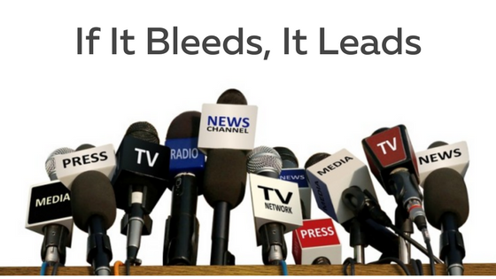

Geostrategist | Clarity in Geopolitical Complexity
Mark Brolin delivers decision-ready geopolitical and geo-economic briefings that cut through noise and narrative. He helps leaders in business and public policy identify early signals, reduce blind spots, and translate volatility into clearer priorities and smarter timing - across strategy, risk, investment, security, regulation and societal transition.
What clients gain
- • Earlier signal detection
- • Clearer strategic priorities
- • More proportionate risk decisions
- • Implications for supply chains, regulation, capital allocation
- • Less hype
About Mark Brolin
Meet Mark Brolin
Mark Brolin is a London based GeoStrategist, Bias Specialist and Author, known for his insightful and noise cancelling analysis and commentary on global affairs. He holds a degree from the Stockholm School of Economics and has a rich professional background, including roles in the Swedish Foreign Ministry, Nasdaq, and Cantor Fitzgerald. His career pivot from corporate development to geopolitics and geoeconomics was profoundly influenced by the tragic events of September 11, when he lost 658 colleagues. Mark has extensive experience working with business leaders, policy specialists, research institutes, and think tanks across three continents. He is moreover a regular contributor to many international media outlets.
“Public discourse remains shockingly primitive - our caveman brains wired to focus on risk rather than opportunity - luckily cognitive psychology and AI are game changers.”
- Mark Brolin
Unique Approach
Realist-Optimism
Mark is one of the very few voices in geopolitics and geoeconomics consistently championing Realist-Optimism - the belief that acknowledging risks should go hand-in-hand with recognising opportunities. Just as Hans Rosling transformed the public understanding of statistics and Steven Pinker reframed psychology and philosophy, Mark applies the same balance to the geopolitical stage.
No-Nonsense Analysis
He actively cuts through groupthink, short-term hype, and background “noise” to deliver analysis that is robust, factual, and multidimensional - always tied to practical application. His pragmatic, can-do approach draws on a diverse professional background and an unusually acute awareness of both cognitive and institutional biases, enabling him to see patterns and pitfalls others often miss.
Bottom-Up Understanding
Mark counterbalances the structural bias toward top-down perspectives by paying close attention to insights that emerge from the ground up. He recognises that truth rarely flows neatly from the top tiers of policy or academia - it bubbles up from lived realities, where policy meets practice.
Political Neutrality
He remains politically neutral by definition, convinced that every ideological camp has something useful to offer - but equally aware that all sides, without exception, will eventually overreach if given the chance. His work is grounded in balance, perspective, and an unwavering commitment to intellectual honesty.

Mission & Philosophy
Trusted by boards, policymakers and global audiences, Mark Brolin delivers authentic, data-driven insights that cut through institutional and cognitive biases, including negativity bias and echochamber groupthink of all sorts. His Noise-Cancelling Clarity equips leaders to grasp the big picture - and act with confidence in an unpredictable world. He focuses on the deeper currents beneath the news cycle - those subtle shifts in public sentiment that repeatedly outpace and outsmart mainstream analysis.
He chooses to operate where change truly begins: not in the ivory tower, but at ground level, where ideas are tested against practical reality. Truth, in his experience, rarely trickles down from above - it bubbles up from lived experience. This vantage point has consistently kept him ahead of the anxious, hype-oriented consensus.
 Mark observes that humans have a habit - we thrive on existential threats. Every era has its own doomsday narrative: Y2K, the ozone layer, oil depletion (or excess), nuclear war, the demographic bomb, China, nationalism, de-globalisation, AI stealing jobs - the list goes on. While Ukraine has every reason for concern, its fight to break free from Moscow is actually proof of Russia's weakness, not its strength. Yet, the panic narrative persists. Why? Because fear sells. Politicians, media outlets, budget seekers, and many other influencers have a vested interest in keeping the world in a permanent state of emergency.
In an era where public conversation is dominated by worst-case thinking, Mark’s mission is to restore balance. He believes younger generations in particular are underserved - unknowingly betrayed even - by the relentless negativity bias of today’s discourse. Through his work, Mark aims to offer a credible counterweight while also doing what he can to elevate public conversation in general. Not least by equipping people to think deeper, smarter and step confidently into what’s next.